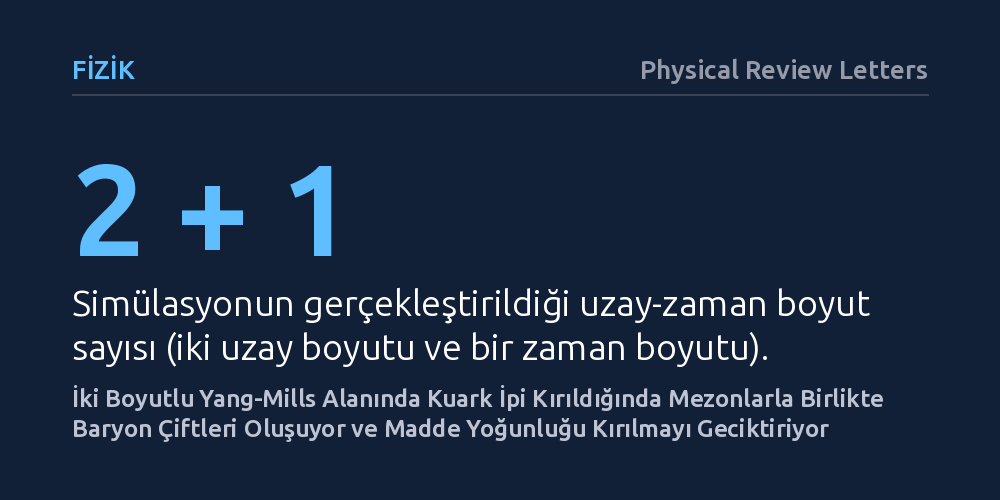

FIZIK · Physical Review Letters · 2026-10-18
Araştırmacılar, tensör ağı yöntemlerini kullanarak iki uzay boyutlu SU(2) Yang-Mills kuramında kuarkları birbirine bağlayan enerji ipinin gerçek zamanlı dinamiklerini simüle etti. İpin kırılması sırasında mezonların yanı sıra baryon-antibaryon çiftlerinin de oluştuğu ve ortamdaki baryon yoğunluğunun bu kırılmayı geciktirdiği saptandı.
Bulgu, atom çekirdeğini bir arada tutan kuarkların ve nötron yıldızlarındaki yoğun maddenin davranışını geleceğin kuantum simülatörleriyle laboratuvarda test edebilmek için teorik bir yol haritası sunuyor.

Doğadaki proton ve nötron gibi atomaltı parçacıklar, kuark adı verilen daha temel yapı taşlarından oluşur. Ancak elektrik yüklerinin aksine, iki kuarkı birbirinden ne kadar uzağa çekerseniz çekin onları asla tek başlarına serbest bırakamazsınız. Aralarındaki gluon alanı uzaya yayılmak yerine dar bir tüp ya da adeta gergin bir kuantum ipi gibi yoğunlaşır; mesafe arttıkça bu ipte depolanan enerji de doğrusal biçimde büyür.
İp yeterince gerildiğinde sistem için en düşük enerjili yol ipin kopmasıdır. Ancak bu kopma boşluğa düşmek yerine, biriken enerjiden yeni parçacık çiftlerinin var olmasıyla sonuçlanır. Bugüne kadar fizikçiler bu süreci çoğunlukla basitleştirilmiş ve tek boyutlu modeller üzerinden inceleyebilmişti. Doğa ise çok boyutludur ve gluonların birbirleriyle de etkileştiği "değişmeli olmayan" karmaşık bir simetri yapısına sahiptir. İki boyutlu uzayda bir kuark ipinin gerçek zamanda nasıl koptuğu ve parçacık ürettiği sorusu bu yüzden temel fiziğin en zorlu problemlerinden biridir.
Kuantum alan teorilerini zaman içinde adım adım simüle etmek, kuantum sistemlerinin barındırdığı devasa olasılık uzayı yüzünden süper bilgisayarlar için bile altından kalkılamaz bir yüktür. Parçacık sayısı ve boyut arttıkça gereken işlem gücü katlanarak patlar. Araştırmacılar bu darboğazı aşmak için parçacıklar arasındaki kuantum dolanıklığını sıkıştırılmış matrisler halinde temsil eden tensör ağı algoritmalarından yararlandı.
Çalışmada iki uzay ve bir zaman boyutundan oluşan bir ızgara üzerinde SU(2) Yang-Mills kuramı modellendi. Bu model yalnızca kuantum alanının kendisini değil, alanla etkileşen hareketli maddeyi de içeriyordu. Böylece araştırmacılar, güçlü etkileşim koşulları altında gerilen bir kuark ipinin zaman içindeki salınımlarını ve nihai kırılma anını yüksek sayısal hassasiyetle takip edebildi.
Yapılan simülasyonlar, rezonans koşullarında kuark ipinin keskin bir Casimir enerjisi düşüşüyle kırıldığını gösterdi. Bu kırılma yalnızca bir kuark ve bir antikuarktan oluşan mezonları üretmekle kalmadı; aynı zamanda çoklu kuark yapılarının temeli olan baryon ve antibaryon çiftlerini de ortaya çıkardı. Bu durum, yalnızca değişmeli olmayan alan teorilerine özgü zengin bir parçacık üretim mekanizmasını açığa çıkardı.
Araştırma ekibi ortamdaki madde yoğunluğunu artırdığında ise "baryon blokajı" adı verilen bir mekanizma keşfetti. Yoğun ortamda kuantum durumlarının önceden dolmuş olması nedeniyle yeni baryon çiftlerinin üretimi baskılanıyor ve bu durum ipin kopma sürecini belirgin biçimde geciktiriyordu. Rezonans dışındaki bölgelerde ise manyetik terimlerin etkisiyle gluon topu benzeri uyarımlar ve kendi üzerine katlanan ipler gibi karmaşık kuantum desenleri gözlemlendi.
Elde edilen bulgular, nötron yıldızlarının kalbindeki aşırı yoğun nükleer maddeden evrenin ilk anlarındaki parçacık çorbasına kadar doğanın en uç noktalarındaki süreçleri anlamak için sağlam bir teorik zemin kuruyor. Kuantum ipinin yüksek enerji seviyelerinde sergilediği gerilim azalması rezonansları, temel parçacık etkileşimlerine dair bilinen teorik çerçeveyi genişletiyor.
Bu çalışma aynı zamanda optik cımbızlar, soğuk atomlar veya süperiletken devrelerle inşa edilmekte olan yeni nesil kuantum simülatörleri için deneysel bir kılavuz görevi görüyor. Laboratuvar ortamında henüz doğrudan test edilemeyen karmaşık kuark dinamiklerinin hangi parametrelerde ve ne tür sinyallerle aranması gerektiği, bu simülasyonun sunduğu kestirimlerle belirginleşiyor.